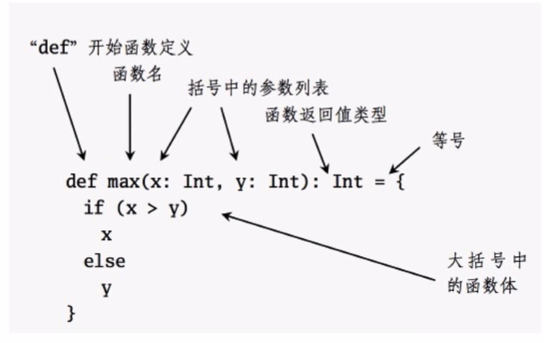
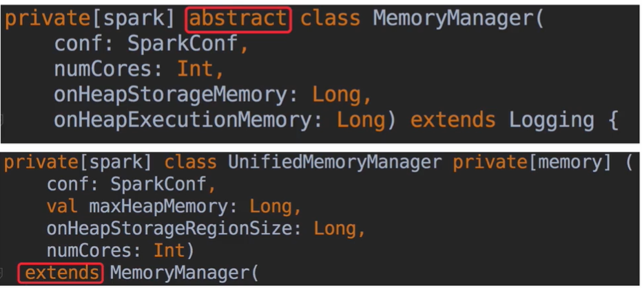
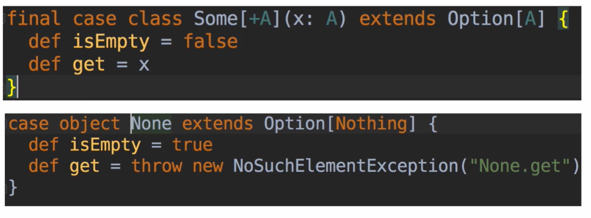

scala 的下载安装 前置条件需要安装JDK8
1 2 3 4 [hadoop@hadoop app]$ java -version java version "1.8.0_231" Java(TM) SE Runtime Environment (build 1.8.0_231-b11) Java HotSpot(TM) 64-Bit Server VM (build 25.231-b11, mixed mode)
官网下载：https://downloads.lightbend.com/scala/2.12.11/scala-2.12.11.tgz
1、解压： tar -zxvf scala-2.12.11.tgz -C ../app/
1 2 3 4 5 6 7 8 9 进入环境变量 vim ~/.bash_profile 添加 export SCALA_HOME=/home/hadoop/app/scala export PATH=$SCALA_HOME/bin:$PATH 刷新环境变量 source ~/.bash_profile
scala初体验 小试牛刀 1 2 3 4 5 6 7 8 9 10 11 scala> 1+2 res0: Int = 3 scala> res0 * 3 res1: Int = 9 scala> res0 * res1 res2: Int = 27 scala> println("Hello World") Hello World
编译运行 vim HelloWorld.scala
1 2 3 4 5 object HelloWorld{ def main(args: Array[String]){ println("Hello World...") } }
编译：scalac HelloWorld.scala
Scala入门 val vs var val：值
1 2 3 4 5 6 7 8 9 10 11 12 13 14 15 scala> val money = 100 money: Int = 100 scala> money = 200 <console>:12: error: reassignment to val money = 200 ^ scala> val age:Int = 20 age: Int = 20 scala> var name:String = "zs" name: String = zs scala> name = "ls" name: String = ls
建议：优先使用val
Scala 数据类型 Byte/Char
Short/Int/Long/Float/Double
Boolean1 2 3 4 5 6 7 8 9 10 11 12 13 14 15 16 17 18 19 20 21 22 23 24 25 26 27 28 29 30 31 32 33 34 35 scala> val a:Int = 10 a: Int = 10 scala> val b:Boolean = true b: Boolean = true scala> val c = false c: Boolean = false scala> val d = 1.1 d: Double = 1.1 scala> val e:Float = 1.1 <console>:11: error: type mismatch; found : Double(1.1) required: Float val e:Float = 1.1 ^ scala> val e:Float = 1.1f e: Float = 1.1 scala> val d = 1.1f d: Float = 1.1 scala> val f = 10 f: Int = 10 类型转换 scala> val g = 10.asInstanceOf[Double] g: Double = 10.0 类型判断 scala> val h = 10.isInstanceOf[Int] h: Boolean = true
lazy在Scala中的使用 1 2 3 4 5 scala> lazy val a = 1 a: Int = <lazy> scala> a res0: Int = 1
比如当读取一个文件a的时候，讲文件赋值给lazy 变量a，只有当调用的时候才会返回文件内容
函数的定义和使用[条件表达式、循环表达式] 
1 2 3 4 5 6 def 方法名(参数名:参数类型): 返回值类型 = { // 括号内的叫做方法体 // 方法体内的最后一行为返回值，不需要使用return }
1 2 3 4 5 6 7 8 9 10 11 12 13 14 15 16 17 18 19 20 21 22 23 24 25 26 27 28 29 30 31 32 33 34 35 36 37 38 39 40 41 42 43 44 45 46 47 48 49 50 51 52 53 54 55 56 57 58 59 60 61 62 63 64 65 66 67 68 69 70 71 72 73 74 75 76 77 78 79 80 81 82 83 84 85 86 87 88 89 90 91 92 93 94 95 96 97 98 99 100 101 102 103 104 105 106 107 108 109 110 111 112 113 114 115 116 117 118 119 120 121 object FunctionApp { def main(args: Array[String]): Unit = { // println(add(2, 3)) // // println(three()) // println(three) // 没有入参的函数，调用时括号是可以省略的 无参与有参调用 // sayHello() // sayHello // sayHello("zhangsan") 默认参数的调用 // sayName() //默认参数的调用 // sayName("zhangsan") // // loadConf() // loadConf("spark-production.conf") //默认参数的调用 命名参数调用 // println(speed(100, 10)) //顺序传参 // println(speed(distance = 100, time = 10)) // println(speed(time = 10, distance = 100)) //无顺序传参 可变参数的调用 // println(sum(1,3,5)) // println(sum2(1,2)) //不确定传参个数 // println(sum2(1,2,3)) // println(sum2(1,2,3,4)) 条件表达式 // val x = 1 // if(x > 0) { // true // } else { // false // } 循环表达式to // 1 to 10 左闭右闭 // 1.to(10) 左闭右闭 // Range(1,10,4) //1 5 9 // 1.until(10) 左闭右开 循环表达式for // for(i <- 1 to 10 if i % 2 == 0) { // println(i) // } 循环表达式for // val courses = Array("Hadoop","Spark SQL", "Spark Streaming","Storm","Scala") // for(course <- courses) { // println(course) // } // course 其实就是courses里面的每个元素 // ==> 就是将左边的course作用上一个函数，变成另外一个结果 // println 就是作用到course上的一个函数 // courses.foreach(course => println(course)) 循环表达式while var (num, sum) = (100, 0) while(num > 0) { // 出口 sum = sum + num num = num - 1 // 步长 } println(sum) } def add(x:Int, y:Int):Int = { x + y // 最后一行就是返回值，不需要return } def three() = 1 + 2 def sayHello(): Unit = { println("Say hello....") } def sayHello(name:String): Unit = { println("Say hello: " + name) } def sayName(name:String = "lisi"): Unit = { println(name) } def loadConf(conf:String = "spark-defaults.conf"): Unit = { println(conf) } def speed(distance:Float, time:Float):Float = { distance/time } def sum(a:Int, b:Int) = { a + b } def sum(a:Int, b:Int, c:Int) = { a + b + c } def sum2(numbers:Int*) = { var result = 0 for(number <- numbers) { result += number } result } }
Scala对象 面向对象 Java/Scala OO
类的定义和使用 1 2 3 4 5 6 7 8 9 10 11 12 13 14 15 16 17 18 19 20 21 22 23 24 25 26 27 28 29 30 31 32 33 34 35 36 37 38 39 40 41 42 object SimpleObjectApp { def main(args: Array[String]): Unit = { val person = new People() person.name = "Messi" // person.age = 30 val不可改变 println(person.name + " .. " + person.age) println("invoke eat method: " + person.eat) person.watchFootball("Barcelona") person.printInfo() // println(person.gender) 不可以直接访问类里的this修饰属性 } } //People类 class People { // 定义属性 var name:String = _ //占位符 val age = 10 private [this] val gender = "male" def printInfo(): Unit ={ println("gender: " + gender) } // 定义方法 def eat():String = { name + " eat...." } def watchFootball(teamName: String): Unit = { println(name + " is watching match of " + teamName) } }
主构造器和附属构造器以及继承 1 2 3 4 5 6 7 8 9 10 11 12 13 14 15 16 17 18 19 20 21 22 23 24 25 26 27 28 29 30 31 32 33 34 35 36 37 38 39 40 41 42 43 44 45 46 47 48 49 50 51 52 object ConstructorApp { def main(args: Array[String]): Unit = { // val person = new Person("zhangsan", 30) // println(person.name + " : " + person.age + " : " + person.school) // // // val person2 = new Person("PK", 18, "M") // println(person2.name + " : " // + person2.age + " : " // + person2.school + " :" // + person2.gender // ) val student = new Student("PK", 18, "Math") println(student.name + " : " + student.major) println(student) } } // 主构造器 class Person(val name:String, val age:Int) { println("Person Constructor enter....") val school = "ustc" var gender:String = _ // 附属构造器 def this(name:String, age:Int, gender:String) { this(name, age) // 附属构造器的第一行代码必须要调用主构造器或者其他附属构造器 this.gender = gender } println("Person Constructor leave....") } // 继承 class Student(name:String, age:Int, var major:String) extends Person(name, age) { println("Person Student enter....") //重写 override val school = "peking" //重写 override def toString: String = "Person: override def toString :" + school println("Person Student leave....") }
抽象类 
1 2 3 4 5 6 7 8 9 10 11 12 13 14 15 16 17 18 19 20 21 22 23 24 25 26 27 28 29 30 31 32 33 34 object AbstractApp { def main(args: Array[String]): Unit = { val student = new Student2() println(student.name) student.speak } } /** * 类的一个或者多个方法没有完整的实现（只有定义，没有实现） */ abstract class Person2 { def speak val name:String val age:Int } class Student2 extends Person2 { override def speak: Unit = { println("speak") } override val name: String = "zhangsan" override val age: Int = 18 }
伴生类和伴生对象 1 2 3 4 5 6 7 8 9 10 11 12 13 14 15 16 17 18 19 20 21 22 23 24 25 26 27 28 29 30 31 32 33 34 35 36 37 38 39 40 41 42 43 44 45 46 47 48 49 50 51 52 53 54 55 56 57 object ApplyApp { def main(args: Array[String]): Unit = { // for(i <- 1 to 10) { // ApplyTest.incr // } // // println(ApplyTest.count) // 10 说明object本身就是一个单例对象 val b = ApplyTest() // ==> 调用的是Object.apply println("~~~~~~~~~~~") val c = new ApplyTest() // 调用的是class.apply println(c) // 调用的是class.apply c() // 调用的是class.apply // 类名() ==> 调用 Object.apply // 对象() ==> 调用 Class.apply } } /** * 伴生类和伴生对象 * 如果有一个class，还有一个与class同名的object * 那么就称这个object是class的伴生对象，class是object的伴生类 */ class ApplyTest{ def apply() = { println("class ApplyTest apply....") } } object ApplyTest{ println("Object ApplyTest enter....") var count = 0 def incr = { count = count + 1 } // 最佳实践：在Object的apply方法中去new Class def apply():ApplyTest = { println("Object ApplyTest apply....") // 在object中的apply中new class new ApplyTest } println("Object ApplyTest leave....") }
cass class 1 2 3 4 5 6 7 8 9 10 11 // 通常用在模式匹配 object CaseClassApp { def main(args: Array[String]): Unit = { println(Dog("wangcai").name) } } // case class不用new case class Dog(name:String)
Trait 多继承
1 2 3 4 5 6 7 8 9 10 Trait xxx extends ATrait with BTrait class SparkConf(loadDefaults: Boolean) extends Cloneable with Logging with Serializable ... .... traint Cloneable [extends XXX] {} traint Logging {} traint Serializable {}
Scala 集合 immutable 不可变
数组 1 2 3 4 5 6 7 8 9 10 11 12 13 14 15 16 17 18 19 20 21 22 23 24 25 26 27 28 29 30 31 32 33 34 35 36 37 38 39 40 41 42 43 44 45 46 47 48 49 50 51 52 object ArrayApp extends App{ // val a = new Array[String](5) 长度为5的空数组 // a.length // a(1) = "hello" 给a[1]赋值 // a(1) 取值 // // val b = Array("hadoop", "spark", "storm") // // val c = Array(2,3,4,5,6,7,8,9) // c.sum // c.min // c.max // // c.mkString(",") 去掉分隔符 转换为了string类型 c.mkString("and") // 2and3and4and5and6and7and8and9 c.mkString("<",",",">") // <2,3,4,5,6,7,8,9> //可变数组 val c = scala.collection.mutable.ArrayBuffer[Int]() c += 1 c += 2 c += (3,4,5) c ++= Array(6,7,8) c.insert(0,0) //在0位置添加0 c.remove(1) c.remove(0,3) c.trimEnd(2) //从尾巴开始删除 c.toArray 可变数组变为不可变数组 数组取数 // for(i <- 0 until c.length) { // println(c(i)) // } 数组取数 // for(ele <- c) { // println(ele) // } 数组反向取数 for(i <- (0 until c.length).reverse) { println(c(i)) } // println(c.toArray.mkString) }
List 面试点：Nil 空的集合
scala> l.head
scala> l.tail
scala> val l2 = 1 :: Nil
scala> val l3 = 2 :: l2
scala> val l4 = 1 :: 2 :: 3 :: Nil
1 2 3 4 5 6 7 8 9 10 11 12 13 14 15 16 17 18 19 20 21 22 23 24 25 26 27 28 29 30 31 32 33 34 35 36 37 38 39 40 41 42 43 44 45 46 47 48 49 50 51 52 53 54 55 56 57 58 59 object ListApp extends App{ // val l = List(1,2,3,4,5) // // // val l5 = scala.collection.mutable.ListBuffer[Int]() 变长List 添加数值 // l5 += 2 // l5 += (3,4,5) // l5 ++= List(6,7,8,9) // 删除数值 // l5 -= 2 // l5 -= 3 // l5 -= (1, 4) // l5 --= List(5,6,7,8) // // println(l5) // // // l5.isEmpty 判断是否为空 // l5.head 取第一个 // l.tail 取除了第一个的值 2,3,4,5 def sum(nums:Int*):Int = { if(nums.length == 0) { 0 } else { nums.head + sum(nums.tail:_*) //:_*将seq转为一个可变参数 } } println(sum()) println(sum(1,2,3,4)) 无序不可重复 // val set = scala.collection.mutable.Set[Int]() // set += 1 // set += (1,1) scala> val set = scala.collection.mutable.Set[Int]() set: scala.collection.mutable.Set[Int] = Set() scala> set += 1 res6: set.type = Set(1) scala> set += (1,1) res7: set.type = Set(1) scala> set += (2,1) res8: set.type = Set(1, 2) scala> set += (1,1) res9: set.type = Set(1, 2) }
Map 1 2 3 4 5 6 7 8 9 10 11 12 13 14 15 16 17 18 19 20 21 22 23 24 25 26 27 28 29 30 31 32 33 34 import scala.collection.mutable import scala.collection.mutable._ object MapApp extends App{ val a = Map("lisi" -> 18, "zhangsan" -> 30) val b = Map("lisi" -> 18, "zhangsan" -> 30) // val c = mutable.HashMap[String,Int]() // b.getOrElse("lisi", 9) 取lisi的value 没有就输出9 循环遍历map // for((key,value) <- b) { // println(key + " : " + value ) // } 循环遍历map // for(key <- b.keySet) { // println(key + " : " + b.getOrElse(key, 9)) // } 循环遍历map中的value // for(value <- b.values) { // println(value) // } 循环遍历map for((key,_) <- b) { println(key + " : " + b.getOrElse(key, 9) ) } }
Option&Some&None 
1 2 3 4 5 scala> val a = Map("lisi" -> 18, "zhangsan" -> 30) a: scala.collection.immutable.Map[String,Int] = Map(lisi -> 18, zhangsan -> 30) scala> a.get("lisi") res10: Option[Int] = Some(18)
1 2 3 4 5 6 7 8 9 10 11 12 13 14 15 16 17 18 19 20 21 22 23 24 25 object OptionApp extends App { val m = Map(1 -> 2) // println(m(1)) // println(m(2)) // println(m.get(1).get) println(m.getOrElse(2, "None")) } /** * case object None extends Option[Nothing] { def isEmpty = true def get = throw new NoSuchElementException("None.get") } final case class Some[+A](x: A) extends Option[A] { def isEmpty = false def get = x } */
Tuple 1 2 3 4 5 6 7 8 9 10 11 12 13 14 15 16 17 package com.imooc.scala.course05 // 元组：(.......) object TupleApp extends App{ val a = (1,2,3,4,5) 遍历元组 for(i <- 0 until(a.productArity)) { println(a.productElement(i)) } val hostPort = ("localhost",8080) hostPort._1 hostPort._2 }